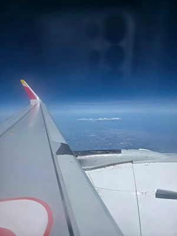
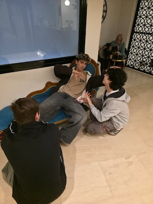

Empezamos el día despertando enfermizamente pronto para ir al aeropuerto.
Allí, con muy pocas ganas y 100 % dormidos, cogimos el primer avión para Madrid y,
de milagro. Después, en Madrid, tuvimos algo de tiempo para desayunar y comer,
pasamos por algunas tiendas del aeropuerto y me compré un pack enorme de Milka.
Durante las 4 horas en el avión a Grecia tuve una potra impresionante, ya que
la mayor parte del vuelo fui capaz de agenciarme 3 asientos enteros y pude tumbarme.
Llegamos a Atenas y ya hubo gente a la que le empezó a dar problemas el roaming, pero no fue mucha cosa.
El verdadero problema fue que a Nico no le aparecía la maleta. Estuvieron en el mostrador de atención
como 30 minutos y acabó en que se la entregaban en el hotel por la mañana del día siguiente,
así que le tocó pedir ropa para el primer día.


Ya en Atenas
Tras salir del aeropuerto y adentrarnos más en la ciudad,
comenzamos a ver la preocupante cantidad de polvo, suciedad y la pobreza
alucinante de la ciudad. Realmente no nos esperábamos la pobreza de Grecia
y la deficiente calidad de las calles. En la visita general en autobús de
la capital, paramos en el estadio donde se celebraron los Juegos Olímpicos
(por fin algo limpio) y nos sacamos unas fotos rápidas. Seguimos visitando
la ciudad sacando fotos rápidas desde el bus hasta llegar finalmente al hotel.
El hotel por dentro estaba bastante bien. Después de una charla en recepción,
donde nos amenazaron con una multa de 200 euros si estábamos en los balcones
(por peligro a que nos cayéramos), vimos las habitaciones y estudiamos la dudosa
fiabilidad de la cerradura electrónica de la puerta. Nos dejaron libres a partir
de aquí y salimos por nosotros mismos a explorar un poquito la ciudad.
Choque de realidad
Aquí fue nuestro primer encuentro con la realidad de Atenas: justo a la derecha de
la puerta del hotel, al cruzar la calle, nos encontramos con un grupo de unos 5 vagabundos
pinchándose una sustancia probablemente ilegal. Decidimos, por algún motivo, continuar nuestra
exploración hacia la derecha en la búsqueda de un súper. El primero que nos encontramos era
claramente una trampa para turistas con precios extremadamente inflados. Tras encontrar un
Carrefour con precios racionales, cogimos 4 tonterías y comenzamos nuestro camino de vuelta al hotel.
La cena en el hotel estuvo bastante bien, superó nuestras expectativas basándonos en la ciudad. La noche estuvo bastante tranquila con pocas cosas que remarcar.